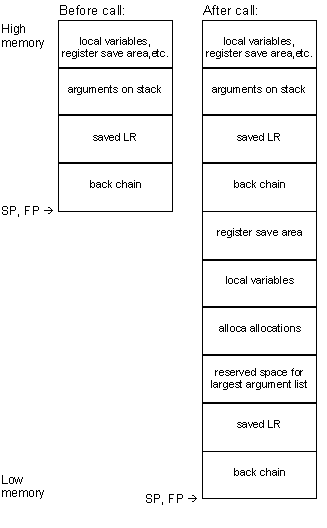

Stack frames for functions that take a variable number of arguments look like this:

GNUPro Toolkit Reference for eCosPowerPC
Cygnus Japan
Nihon Cygnus Solutions
Madre Matsuda Building
4-13 Kioi-cho Chiyoda-ku
Tokyo 102-0094
Telephone: +81 3 3234 3896
FAX: +81 3 3239 3300
email: info@cygnus.co.jp
Website: http://www.cygnus.co.jp/
Cygnus Europe
35-36 Cambridge Place
Cambridge CB2 1NS
United Kingdom
Telephone: +44 1223 728728
FAX: +44 1223 7287777
email: euroinfo@cygnus.com
Use the hotline (+1 408 542 9601) to get help, although the most reliable and most expedient means to resolve problems with GNUPro Toolkit is by using the Cygnus Web Support site:
The complete tool name is a three-part hyphenated string. The first part indicates the processor family ('powerpc'). The second part is ('eabi'). The third part is the generic tool name ('gcc'). For example, the GCC compiler for the Motorola PowerPC is 'powerpc-eabi-gcc'.
The Motorola MPC860 package includes the following supported tools:
| Tool Description | Tool Name |
| GCC compiler | powerpc-eabi-gcc |
| C++ compiler | powerpc-eabi-c++ |
| GAS assembler | powerpc-eabi-as |
| GLD linker | powerpc-eabi-ld |
| Standalone simulator | powerpc-eabi-run |
| Binary Utilities | powerpc-eabi-ar
powerpc-eabi-nm powerpc-eabi-objcopy powerpc-eabi-objdump powerpc-eabi-ranlib powerpc-eabi-size powerpc-eabi-strings powerpc-eabi-strip |
| GDB debugger | powerpc-eabi-gdb |
| CPU | Operating System | Vendor |
| x86 | Windows NT 4.0 | Microsoft |
| x86 | Redhat Linux 5.x, 6.0 | Redhat |
C:\cygnus\gnupro\i686-cygwin32\powerpc-eabi\<release>
Note:
The variable '<release>'
indicates the release directory name found on the CD.
/usr/cygnus/<version>/H-<host>/bin.
http://sourceware.cygnus.com/ecos/
/usr/cygnus/<version>/src
/usr/cygnus/<version>/H-<host>/bin
PROOT=/usr/cygnus/<version>
PATH=$PROOT/H-<host>/bin:$PATH
INFOPATH=$PROOT/info:${INFOPATH-/usr/local/info:/usr/info}
MANPATH=$PROOT/man:${MANPATH-/usr/local/man:/usr/man}
export PATH INFOPATH MANPATH
setenv PROOT /usr/cygnus/<version>
if ( "$?MANPATH" == "0" ) then
setenv MANPATH "/usr/local/man:/usr/man"
endif
if ( "$?INFOPATH" == "0" ) then
setenv INFOPATH "/usr/local/info:/usr/info"
endif
setenv MANPATH $PROOT/man:$MANPATH
setenv INFOPATH $PROOT/info:$INFOPATH
set path = ( $PROOT/H-<host>/bin $path )
Start->Programs->Cygnus eCos->eCos Development Environment
On Windows hosts this will be part of your Cygwin tools installation.
mkdir /tmp/build
cd /tmp/build
/usr/cygnus/<version>/src/configure -v \
--prefix=INSTALLDIR \
--exec-prefix=INSTALLDIR/H-<host> \
--target=TARGET > configure.out 2>&1
make -w all install LANGUAGES="c c++" > make.out 2>&1
These '-m' options are defined for the PowerPC.
The optional argument is the number of words that are checked at
the end of each text page. It may be any value from 1 to 10 and defaults
to 5.
New compiler and linker
features
static object_t myobj __attribute__((init_priority (30000) ));
The syntax is slightly different if the object takes any arguments to its constructor:
static object_t myobj __attribute__((init_priority
(30000) )) = \
object_t(arg1, arg2);
The numeric priority can be from 1 to 65535, with 1 being the highest priority, and 65535 being the lowest. The default priority for objects without this attribute is 65535. Constructors with a higher priority are guaranteed execution before constructors with lower priority.
In all cases, you must provide the argument '-finit-priority' to the compiler on its command-line for it to recognize this attribute when you are compiling your C++ source files.
If you are using eCos, be warned that eCos uses initialization
priorities internally. Ensure you choose an appropriate priority level
so that other eCos subsystems will have initialized before you refer to
them in your own constructor.
The GNUPro C and C++ compilers can now optionally remove these unnecessary functions from the final image. They also ensure that any shared global data is removed that is only referenced by functions that are removed. This can be done by including the options '-ffunction-sections' and '-fdata-sections' on the command-line, when you invoke the C or C++ compiler. The '-ffunction-sections' option removes unnecessary functions, and the '-fdata-sections' option removes unnecessary data.
In addition, when classes define virtual methods in C++, it is possible to remove any unused methods from the final image by passing the option '-fvtable-gc' to the C++ compiler on its command-line.
In all cases, you must also supply a command-line option
when linking. If invoking the linker ('ld')
directly, use '--gc-sections'
on its command-line; alternatively, if you are using the preferred method
of linking your executable, using the form
'gcc -o <program
name> <file1>.o <file2>.o',
then also pass the option '-Wl,--gc-sections'
on the compiler command-line, for example:
| Type | Size (bytes) | Alignment (bytes) |
| char | 1 byte | 1 byte |
| short | 2 bytes | 2 bytes |
| int | 4 bytes | 4 bytes |
| unsigned | 4 bytes | 4 bytes |
| long | 4 bytes | 4 bytes |
| long long | 8 bytes | 8 bytes |
| float | 4 bytes | 4 bytes |
| double | 8 bytes | 8 bytes |
| pointer | 4 bytes | 4 bytes |
| Parameter registers: | |
| general-purpose | r3-r10 |
| return general-purpose | r3-r4 |
| floating point | f1-f8 |
| return floating point | f1 |
| Register usage: | |
| function linkage | r0, r11, r12, r31 |
| stack pointer | r1 |
| kernel reserved | r2 |
| small data pointer | r13 |
| volatile | r0, r3-r13, f0-f13, lr, ctr, xer, fpscr, cr0, cr1, cr5-cr7 |
| non-volatile | r14-r31, f14-f31 |
| return address | lr |

When alloca is executed, the back chain to the caller's stack frame and the link register save area must be updated.
The parameter save area does not contain space to store
the 8 integer arguments. If it is desired that they be stored, the callee
must allocate space to save it in the local variable area of the stack.
Structures and unions are copied into temporary slots and an address of
the temporary slot is passed as the argument.
Stack frames for functions that take a variable number of arguments look like this:
DOUBLE OR FLOAT:
If 'FR > f8', go to 'STACK'.
Otherwise, load the parameter value into
floating-point register 'FR' and
advance 'FR' to the next floating-point register.
Then go to 'SCAN'.
SIMPLE ARG:
A SIMPLE ARG is one of the following:
LONG LONG:
If 'GR > r8',
go to 'STACK'. Otherwise, if
'GR'
is even, advance 'GR' to the
next register. Load the 64-bit 'long
long' value into register pair 'GR'
and 'GR+1'. Advance 'GR'
to 'GR+2' and go to 'SCAN'.
STACK:
Parameters not otherwise handled above are passed in the parameter words of the caller's stack frame. SIMPLE ARGs, as defined above, are considered to have size and alignment equal to the size of a general-purpose register, with simple argument types shorter than this sign-extended or zero-extended to this width. 'float' arguments are considered to have size and alignment equal to the 32 bits. 'double' and 'long long' are considered to have size and alignment equal to 64 bits. Round 'STARG' up to a multiple of the alignment requirement of the parameter and copy the argument byte-for-byte into 'STARG', 'STARG+1', ... 'STARG+size-1'. Set 'STARG' to 'STARG+size' and go to 'SCAN'.
The 'va_list'
type is defined as follows:
| Type | Register |
| int | r3 |
| short | r3 |
| long | r3 |
| long long | r3+r4 |
| float | f1 |
| double | f1 |
| struct/union | see below |
The compiler will generate assembly code, which uses the numbers '0' through '31' to represent general-purpose registers.
The following symbols can be used as aliases for individual registers:
| Symbol | Register |
| sp | r1 |
| toc | r2 |
| Symbol | Register |
| lr | the link register |
| ctr | the count register |
| cr0 ... cr7 | the condition registers |
| .abicalls | .dcb.b | .fail | .irepc | .psize |
| .abort | .dcb.d | .file | .irp | .purgem |
| .aent | .dcb.l | .fill | .irpc | .quad |
| .align | .dcb.s | .float | .lcomm | .rdata |
| .appfile | .dcb.w | .fmask | .lflags | .rep |
| .appline | .dcb.x | .format | .linkonce | .rept |
| .ascii | .debug | .frame | .list | .rva |
| .asciiz | .double | .global | .livereg | .sbttl |
| .asciz | .ds | .globl | .llen | .sdata |
| .balign | .ds.b | .gpword | .loc | .set |
| .balignl | .ds.d | .half | .long | .short |
| .balignw | .ds.l | .hword | .lsym | .single |
| .bgnb | .ds.p | .if | .macro | .skip |
| .bss | .ds.s | .ifc | .mask | .space |
| .byte | .ds.w | .ifdef | .mexit | .spc |
| .comm | .ds.x | .ifeq | .mri | .stabd |
| .common | .dword | .ifeqs | .name | .stabn |
| .common.s | .eject | .ifge | .noformat | .stabs |
| .cpadd | .else | .ifgt | .nolist | .string |
| .cpload | .elsec | .ifle | .nopage | .struct |
| .cprestore | .end | .iflt | .octa | .text |
| .data | .endb | .ifnc | .offset | .title |
| .dc | .endc | .ifndef | .option | .ttl |
| .dc.b | .endif | .ifne | .org | .verstamp |
| .dc.d | .ent | .ifnes | .p2align | .word |
| .dc.l | .equ | .ifnotdef | .p2alignl | .xcom |
| .dc.s | .equiv | .include | .p2alignw | .xdef |
| .dc.w | .err | .insn | .page | .xref |
| .dc.x | .exitm | .int | .plen | .xstabs |
| .dcb | .extern | .irep | .zero |
--mpc860c0[=NUM]
The problem is that some chips may treat the target instruction as a
no-op, given the following conditions:
The optional argument is the number of words that are checked at
the end of each text page. It may be any value from 1 to 10 and defaults
to 5.
The problem is avoided by changing problematic branches to be predicted
as taken.
There are two ways for GDB to talk to a PowerPC target.
Note:
Loading binaries into the simulator that were built for
real hardware with RAM startup will not work.
To activate the simulator in GDB, follow the instructions
in the Simulator section later in this document.
Debugging programs with
multiple threads
In some operating systems, such as eCos, a single program may have more than one thread of execution. The precise semantics of threads differ from one operating system to another, but in general the threads of a single program are akin to multiple processes, except that they share one address space (that is, they can all examine and modify the same variables). On the other hand, each thread has its own registers and execution stack, and perhaps private memory.
GDB provides the following functions for debugging multi-thread programs
For debugging purposes, GDB associates its own thread number, always a single integer, with each thread in your program.
info threads
(gdb) thread 2
[Switching to thread
2]
#0 change_state (id=0,
newstate=0 '\000')
at /eCos/kernel/current/tests/bin_sem2.cxx:93
93 if (PHILO_LOOPS
== state_changes++)
Current language:
auto; currently c++
thread apply [<threadno>][<all>]
<args>
When your program has multiple threads, you can choose
whether to set breakpoints on all threads, or on a particular thread.
If you do not specify 'thread <threadno>' when you set a breakpoint, the breakpoint applies to all threads of your program.
You can use the thread qualifier on conditional breakpoints
as well; in this case, place 'thread
<threadno>'
before the breakpoint condition, as the following example shows.
Conversely, whenever you restart the program, all threads start executing. This is true even when single stepping with commands like 'step' or 'next'. In particular, GDB cannot single-step all threads in lockstep. Since thread scheduling is up to your debugging target's operating system (not controlled by GDB), other threads may execute more than one statement while the current thread completes a single step. In general other threads stop in the middle of a statement, rather than at a clean statement boundary, when the program stops.
You might even find your program stopped in another thread
after continuing or even single stepping. This happens whenever some other
thread runs into a breakpoint, a signal, or an exception before the first
thread completes whatever you requested.
Normally GDB does not attempt to interfere with thread scheduling. This means that in the default mode ('scheduler-locking off'), the current thread may be scheduled out, and a different thread may begin running, at any time (as determined by the native scheduler). For instance, you may give a GDB command such as 'step' or 'finish', and when the command completes, you may be looking at a different thread.
If you set the scheduler-locking mode to 'step', then GDB will try to interfere with the native scheduler just enough to prevent another thread from popping up while you debug. Other threads may get to run sometimes, but whenever a command such as 'step' or 'finish' completes, you should be looking at the same thread that was running before the command. Of course, if another thread gets to run and hits a breakpoint, GDB will still switch you to that thread (so if you don't want that to happen, then disable your breakpoints).
For even greater (and more intrusive) control over the thread scheduler, GDB provides the mode 'scheduler-locking on'. In this mode, the native scheduler is completely locked, and no thread may run except the current one. Obviously this will radically change the behavior of your program, and may lead to deadlock or other unpleasant consequences, so use it with caution.
Syntax:
set scheduler-locking [off on step]
The PowerPC simulator is capable of matching the instruction timing characteristics of different PowerPC CPUs, and can provide detailed instruction dispatch and cache profiling information. This can be handy for performance analysis, but is not necessary for simply testing eCos programs.
The simulator can also model devices, which will eventually allow eCos programs compiled for hardware targets to be run on the simulator. This is already possible to do on the simulators for the two other eCos target CPUs, but no devices have been defined for the PowerPC simulator in this release.
The current release of eCos only supports the Motorola MPC860, which does not contain floating-point registers, so these registers are not currently used.
The user program is provided with a single block of memory at address '0x00000000'. The default size of this block is 1MB, but another size can be specified at simulator startup.
Simulator-specific command line options
-o '/iobus/pal@0xf0001000/reg 0xf0001000 32'
C:\> powerpc-eabi-run
-o '/iobus/pal@0xf0001000/reg 0xf0001000 32' hello
Hello, eCos world!
The error message will include the address of the problematic branch.
The problem is that some chips may treat the target instruction as a
no-op, given the following conditions:
The optional argument is the number of words that are checked at
the end of each text page. It may be any value from 1 to 10 and defaults
to 5.
--help
C:\> powerpc-eabi-run
-–help
Usage:
HAL configuration, for various download methods
| Download method | HAL configuration |
| Burn hardware ROM | ROM startup |
| Download to ROM emulator | ROM startup |
| Download to board with GDB stub | RAM startup |
| Download to simulator ignoring devices | SIM configuration |
Simulator clocks and timers sometimes appear to be running very slowly, even when there are apparently no active threads. Delays that should only be in seconds can run to minutes. These delays occur because the eCos kernel idle thread is running intensively, and the simulator emulates it faithfully. With the SIM configuration, however, the eCos kernel realizes it is in a simulated environment, and can therefore adjust the clock settings to be more realistic.
For further information on the PowerPC PSIM simulator,
please refer to
For example, suppose you are debugging a ROM monitor in the simulator invoked from GDB (we'll call this GDB1), and you have downloaded an application to it from a second GDB session (which we will call GDB2). The second GDB session, GDB2, would simply consider the simulated target as a remote target and nothing more. Now suppose that in GDB2 you set a breakpoint in the program. The breakpoint will be physically set in GDB1. So when the breakpoint is reached, instead of the breakpoint being handled by the ROM monitor as if it was a real target, the breakpoint will be interpreted by GDB1 as if you had asked GDB1 to set a breakpoint in the ROM monitor code. This may not be your desired intention. To solve this, you can tell GDB1 not to process breakpoints itself, but to let the simulated target process them.
To do this, use the following command:
For example the command 'handle SIGTRAP pass nostop noprint' tells GDB to not stop the simulated target at a breakpoint, or even to print that it has been stopped. Instead, the command tells GDB to pass the information back to the program. You can modify the command to use with other signals and exceptions.
Note:
If you use the aforementioned command, you will no longer
be able to set breakpoints in the ROM monitor code (as in the example).
You may be able to work around this problem by using conditional breakpoints.
Please consult the GDB manual on how to use conditional-breakpoints.
The ambiguities discussed in this section are not a problem
when you are using the standalone simulator. In such a case, the standalone
simulator is the only target program that can handle the exception.
PowerPC (tm) Microprocessor Family:The Programming Environments
(Published by both IBM (MPRPPCFPE-01) and Motorola (MPCFPE/AD))
PowerPC MPC823 User's Manual
Motorola (MPC823UM/D)
MPC850 Integrated Communications Microprocessor User's Manual
Motorola (MPC850UM/D)
MPC860 PowerQUICC User's Manual
Motorola (MPC860UM/AD)
Getting Started with eCos
(Sunnyvale: Cygnus Solutions, 1999)
eCos User's Guide
(Sunnyvale: Cygnus Solutions, 1999)
eCos Reference Manual
(Sunnyvale: Cygnus Solutions, 1999)
Getting Started with GNUPro Toolkit
(Sunnyvale: Cygnus Solutions, 1999)
GNUPro Compiler Tools
(Sunnyvale: Cygnus Solutions, 1999)
GNUPro Debugging Tools
(Sunnyvale: Cygnus Solutions, 1999)
GNUPro Libraries
(Sunnyvale: Cygnus Solutions, 1999)
GNUPro Utilities
(Sunnyvale: Cygnus Solutions, 1999)
GNUPro Tools for Embedded Systems
(Sunnyvale: Cygnus Solutions, 1999)
System V Application Binary Interface
(Prentice Hall, 1990)